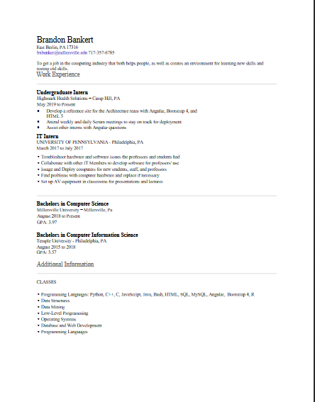

Top
About
Images
Contact Me
GitHub
Resume
Brandon Bankert
About me
Professional Interests
Problem solving is why I chose computer science as a career path
Difficult problems are especially fun to solve
Learning new technologies is also fun
I specialize in Front End Web Development
Personal Interests
Cooking for my family
Learning the Japanese Language
Playing video games
Watching anime
Education
Millersville University
Bachelors of Science in Computer Science
GPA: 3.92
Relevant classes
Artificial Intelligence
Computer and Network Security
Data Mining
Operating Systems
Software Engineering
Languages
HTML
CSS
Javascript/Typescript
Python
Java
Projects
Angular UML Editor
Developed a client side UML editor with Angular and Typescript
Worked with team members in a Agile methodology
Unit testing for regression testing
Live Link
Resume Webpage:
Use HTML to design elements directly on webpage
Use CSS to change style of elements
Use Javascript to develop functions for elements, the sidebar
Use Photoshop to create images for the background
Made the webpage mobile responsive
Currently Learning: .NET with C#
Learning to create a web application through .NET
Link to GitHub repository
Professional Experience
Web Developer Intern
Worked at Highmark Health Solutions
Developed a reference site for the company's intranet using Angular
Adjusted the site to be mobile responsive and 508 compliant with Bootstrap
Developed using an agile methodology
Created documentation for future developers to reference for both the site and Angular
Assisted other interns with Angular questions
IT Helpdesk Intern
Worked at University of Pennsylvania
Acted as point of contact for all techincal issues both students and faculty had
Assisted higher level IT members provide solutions for more complex issues
Imaged and deployed hardware for new faculty members
Created documentation for software usage that met the college's standards
This is the old background image, but it still looks nice

This is my resume
This is a self made image to represent me
This is the new background; self made of course...